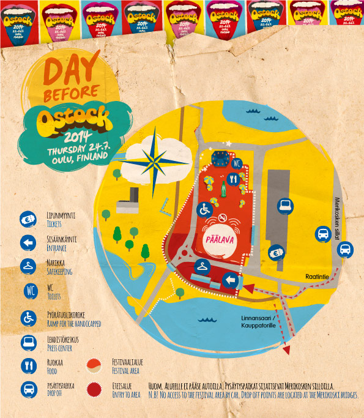
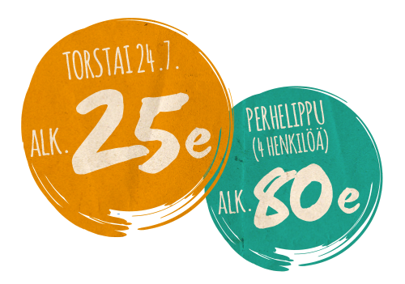

Day Before Qstock
Day Before Qstock 24.7. aikataulu:
• klo 16.00 Portit
• klo 18.00 Isac Elliot
Tapahtuma-alueen porteille toivotaan saapuvan vasta konserttipäivänä, sillä Qstock-festivaalin rakennus on käynnissä festivaaliviikolla. Rakennusalueella liikkuminen on ehdottomasti kielletty turvallisuuden takaamiseksi. Jonotus tapahtuu lippujen tarkistusteltan edessä sijaitsevalla pysäköintialueella.
Saapuminen alueelle
Day Before Qstockin alue sijaitsee Oulun keskustan läheisyydessä Raatinsaaren alueella.
Tapahtuma-alueen tarkka osoite on Raatintie 2, 90100 Oulu.
Alueelle ei voi saapua autolla. Merikosken silloilla on merkityt pysäytyspaikat, johon voi alueelle saapuvat henkilöt jättää. Qstockin alueen läheisyydessä Linnansaaressa sijaitsee pyöräparkki, jonne voi kätevästi jättää pyörät. Pyörien säilytys tapahtuu omalla vastuulla.
Kävellen alueelle pääsee helpoiten Oulun Kauppatorin eli Torinrannan kautta kohti Linnansaarta tai Merikosken siltoja pitkin.
Portit ja turvatarkastus
Alueelle sisäänkäynti tapahtuu Raatin venelaiturin viereisestä teltasta. Sisäänkäynnillä tarkistetaan liput sähköisesti ja tehdään asiakkaille turvatarkastus. Turvatarkastuksen toimintaa voi nopeuttaa jättämällä kielletyt asiat kotiin. Tarkista kielletyt ja sallitut esineet täältä. Lipulla pääsee alueelle sisään vain kerran.
Day Before Qstock aluekartta

Lipunmyynti
Ennakkomyynti: Lippupalvelu ja Arinan Prismat
Lippujen hintoihin lisätään toimitustavasta riippuen Lippupalvelun palvelumaksu. Lue lisää palvelu- ja toimituskuluista Lippupalvelun sivuilta. Kaikissa lipunmyyntiä koskevissa kysymyksissä voit ottaa Lippupalveluun yhteyttä.

Porttimyynti:
Porttimyynti aukaistaan, mikäli ennakkolippuja jää myymättä.
Lipunmyyntipiste sijaitsee alueen pääportin läheisyydessä ja on auki klo 15.00-18.30.
Narikka & löytötavarat
Alueen sisäpuolella sijaitsee narikka. Narikkamaksu on 3 € sisään tullessa ja 2 € aina narikalla käytäessä. Qstock vastaa narikkaan jätetyistä tavaroista VAIN tapahtuman aukioloaikoina, joten muistathan hakea tavarasi lähtiessäsi. Löytötavarat ja narikkaan jääneet tavarat säilytetään festivaalialueella lauantaiyöhön klo 02:00 saakka, jonka jälkeen ne ovat noudettavissa Pohjois-Pohjanmaan Löytötavarapalveluilta Oulussa osoitteesta Paakakatu 2, 90520 Oulu (HUOM. osoite vaihtunut heinäkuun alussa) Puh. 0600 550 094.
Liikennejärjestelyt
Qstock-viikonloppu sulkee Kuusisaaren sekä Raatin harjoituskenttää ympäröivät tiealueet festivaalin ja Day Before Qstockin ajaksi. Tuiran kevyen liikenteen väylä Toivoniemen ja Kuusisaaren välillä on suljettu torstaiaamusta sunnuntai-iltapäivään. Raatin urheiluhallin palveluja käyttäville sekä Pikisaaren asukkaille ja siellä asioiville on järjestetty erillinen kulkureitti Raatin venelaiturin kevyen liikenteen väylää pitkin. Pikisaaren asukkaat saavat lisäksi omat ajoluvat, jotka jaetaan jokaisen asukkaan postilaatikkoon.